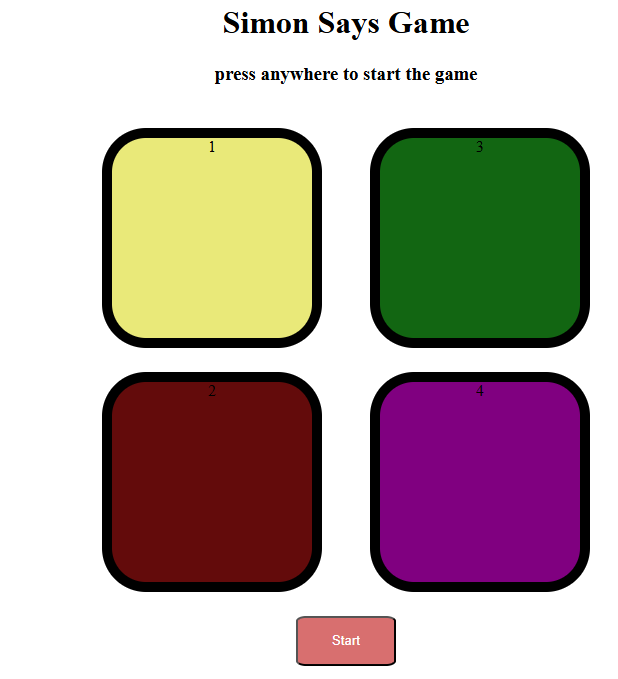

About Me

Hey! Everyone My name is Monu Kumar Shaw .I am a 4th year student at Narula Institute of technology Agarpara Kolkata. As my stream is ECE(Electronics and Communication Enginner) , I wanna be a Software Enginner because i have more interest on Software like Stuff. I have a passion for coding and I love to create innovative solutions. I am proficient in various programming languages and frameworks, and I enjoy working on challenging projects that push my limits.
Education & Qualification
- B.Tech in Electronics and Communication Engineering, Narula Institute of Technology, Kolkata (Expected Graduation: 2026)
- I have completed my 10th(WBBSE) and 12th(WBCHSE) from Khanna Hish School Kolkata with a percentage of 70 and 72.6 respectively.
Projects
Simon Says Game
This is a Frontend Based Software Project. I have made this using HTML3, CSS and JS(the Different DOM manipulation concept).The project is a simple game where the player has to repeat a sequence of colors and sounds generated by the game. It is mainly a game of memory and concentration. The player has to follow the sequence and click on the colors in the same order as they are generated by the game. The game starts with a simple sequence and gradually increases in complexity as the player progresses. The player has to remember the sequence and click on the colors in the same order as they are generated by the game. The game ends when the player makes a mistake or completes the sequence successfully. The game is designed to be simple and easy to play, with a focus on improving memory and concentration skills.
click on img to Visit.
Online-Voting-System
This is a Full Stack Project, I have made this using the teck-stack HTML, CSS and JS(Frontend), Node js and Express js(Backend) and MongoDB(Database).The project is a simple online voting system where users can register, login, and cast their votes for different candidates. It is mainly a web application that allows users to participate in the voting process from the comfort of their homes. The project is designed to be user-friendly and easy to navigate, with a focus on providing a seamless voting experience. The project includes features such as user registration, login, candidate selection, and vote casting. The project also includes an admin panel where administrators can manage the data of the Voters. If the Voter has already voted, then he/she cannot vote again. The project is designed to be secure and reliable, with a focus on ensuring the integrity of the voting process.
click on img to Visit.
Basic Quora Backend Page
Recently I have learnt the Backend tech-stacks so i thought i should build any Project on backend only so i have made a Basic Quora Backend Page using Node js and Express js. The project is a simple backend application that allows users to create, read, update, and delete questions and answers. It is mainly a web application that allows users to interact with the Quora platform. The project is designed to be user-friendly and easy to navigate, with a focus on providing a seamless user experience. The project includes features such as Create Posts , Edit posts, View posts and delete posts. The project is mainly based on the REST Api concept, where the user can perform CRUD operations on the questions and answers.
click on img to Visit.
Electricity_Generation Using PZT
This is a Hardware Based Project.It is build on mainly the application of PZT(Piezoelectric transducer) where the PZT is used to generate electricity from mechanical vibrations. The project involves the use of a PZT sensor, which converts mechanical energy into electrical energy. The PZT sensor is connected to a circuit that converts the generated electrical energy into usable power. The project is designed to demonstrate the potential of PZT technology in generating electricity from mechanical compression, such as those produced by footsteps or other movements. The project includes features such as a PZT sensor, a circuit for converting the generated electrical energy into usable power, and a display for showing the generated voltage. The project is designed to be simple and easy to build, with a focus on demonstrating the potential of PZT technology in generating electricity. The project is suitable for students and hobbyists who are interested in exploring the potential of PZT technology in generating electricity from mechanical vibrations. other components like Bridge rectifier which convets the generated AC voltage into DC voltage, a capacitor which stores the generated voltage and a voltmeter which displays the generated voltage.
Contact